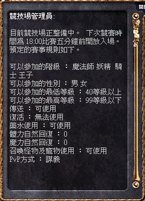

|
2002年10月28日
香港伺服器更新後一些發現及心得
1. 部分NPC或道具名稱有錯誤。（在其後的更新檔修正了）
2. 怪物經驗值計算公式變更，由原先的：
經驗值 = 等級 * 等級 +1
如果怪物等級9或以上，額外加50
如果怪物防禦是0,1或2，額外加(7-防禦力)
如果怪物防禦是低於0，額外加(7-防禦力) x 2 |
更改為：
因此怪物的防禦不再影響經驗值，對於高防的怪物（如死神和鬼魂）來說他們經驗值大約少了四成。另外官方為了維持原有的經驗值，將部分怪物等級調高，怪物等級會影響怪物對玩家的命中率，因此變相增加了怪物的實力。
3. 在奇岩格鬥場的Death Match(官方譯為"無限大戰")為未開放的，但仍會出怪的（第一場的最後首領出了火龍！），現暫定一日兩場，時間為早上及晚上六時，而當中的PvP方式："謀義"應為翻譯錯誤，正確應為"禁止"(Ban)。

4. 奇岩場中間的大柱移除了。
5. 法師試鍊的道具可以從說島外的地方打到，因此大家不用在說島爭打。
6. 大部分試鍊的道具都是非常難打到的，以食屍鬼為例，大約打150-200隻才掉牙齒或指甲，因此大家要有耐性。
7. 在繁忙時間由於在很多玩家同時下載更新檔，因此出現少許Lag的情況，反應時間達至250-300ms水平。
香港伺服器10月28日更新內容
原文：香港天堂官方網站公告
1. 重新包裝說話之島的外觀，說島的圖像變得更繽紛美麗，及移除了木人訓練場，而變成為低，中級玩家的打獵場所。
2. 新增為各職業而設的15級試練，並取消全部現有的試練，試鍊時獲得的道具是不能轉移的，但可以賣給商店的NPC。
法師 - 詹姆的試練 (說話之島)
王族 - 傑羅的試練 (肯特村)
騎士 - 瑞奇的試練 (銀騎士村)
妖精 - 歐斯的試練 (燃柳村)
3. 說話之島和銀騎士村周圍的難度輕微調高。
4. 增添狗項鏈在寵物、被召喚或迷魅的怪物名字後面。
5. 新增王族魔法，學習魔法的等級如下：
| 王族魔法等級 |
要求角色等級 |
| 一級 |
15 |
| 二級 |
30 |
| 三級 |
50 |
6. 魔法頭盔（力量，治療，敏捷）可供王族使用。
7. 部份可供變身的怪物有了等級限制。新增了妖魔巡守的變身選項，等級為15級或以上。
8. 修正了部份怪物死亡時會掉下道具於玩家拿不到範圍內的錯誤。
9. 於盟戰中, 對戰的盟互相可對敵方血盟成員使用緩速術而不變紫人。
10. 玩家殺死10級以下的角色將不會得到任何經驗值；另外，殺死其他玩家的經驗值也減少。
11. 更改了使用隱身術時所需的魔力和體力。
12. 修正死騎防具SET和惡魔防具SET的能力值。
13. 修正了侏儒城盟友在城內重登會返回村莊的錯誤。
14. 修正了使用沙哈之弓時的錯誤，另外調整了沙哈之弓的能力值，增強了攻擊力和攻擊成功率。
15. 刪除了 /morphwin 的命令詞。
16. 降低了新手村內怪物的等級，及不再掉出加速藥水。
17. 修正了隱藏之谷的角色被傳送到歌唱之島的錯誤。
18. 隱藏之谷的怪物只會掉出【指定回到隱藏之谷的卷軸】，歌唱之島的怪物只會掉出【指定回到歌唱之島的卷軸】。
19. 新手區的幻術師可重新替玩家變成所有變身列表內的怪物。
20. 調整了所有怪物的等級，有關詳情，請留意官方網頁日後的公告。
21. 新奇岩競技場啟用。
22. 停止了王族租用奇岩競技場的功能，而無限大戰功能暫時不能使用。
23. 改善了奇岩競技場的照明系統。 |